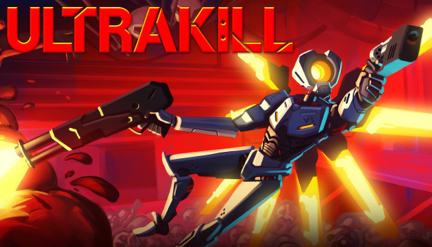

ULTRAKILL is a fast-paced ultraviolent old school first-person shooter developed by Arsi "Hakita" Patala and published by New Blood Interactive. You play as V1, a combat machine fueled by blood who has ventured into the depths of Hell after the extinction of humanity. Hell abounds with demons and tormented souls, sources of blood that you must rend apart in order to refuel yourself and survive.
